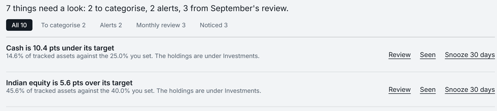

About Pocket

Why it was built
Money in India sits in bank apps, a broker's app, payslips, a tax portal and a spreadsheet. The apps that join them up mostly copy it all to their servers.
Pocket joins them up on your device. What leaves it is listed on the Security page.
What it holds to
- Show the working. Net worth opens into every entry, price and date behind it, added up.
- Never fake a number. A missing price is "unavailable", not estimated; a projection states its assumptions.
- Report, never instruct. It gives the figure, the target and the gap; it never says buy or sell.
- The Free plan is real. Tracking, the Health Score, forecasts and Ask Pocket are free for good; reading, exporting and deleting your data never need a plan (Pricing).
Who is behind it
One founder in India designs, builds and supports Pocket. Email to support@mypocketfi.com is answered by the person who wrote the code.
Where it stands
The newest is build v3.2.11 (26 October 2026), for Windows 10 and 11, macOS, Linux and Android, on the Download page. It is version 14 since the first build named Pocket, on 28 September 2026; each one is on the Changelog, with what it changed and what is still limited.
- The stores are coming; until then Android is an APK on the Download page, and there is no iPhone app. What is next is on the Roadmap.
- Windows and Mac builds are not yet signed or notarised, so each asks you to confirm the first open.
- On Windows, Pocket encrypts its database when you turn that on; the phone app always does; a Mac or Linux does not yet. The security architecture says exactly what is and is not encrypted.
Press kit
Use anything here to write about Pocket: a personal-finance app for India that runs on your own device.
- Logo for light backgrounds (SVG) · for dark backgrounds (SVG) · the mark alone (SVG) · app icon (PNG, 512 × 512)
- Share card 1200 × 630 (PNG)
- Screens the desktop dashboard · investments, each on the sample person, never a real one
- Facts Pocket 3.2.11 for Windows, macOS, Linux and Android; free, with Founder Pro at ₹499 a month; made in India; every release on the Changelog
- Contact support@mypocketfi.com, subject "Press"


Accountability
Everything reaches the founder at support@mypocketfi.com; the Support page has a ready-made email for each. The Terms, Privacy Policy, Refund Policy and License Terms say the rest.